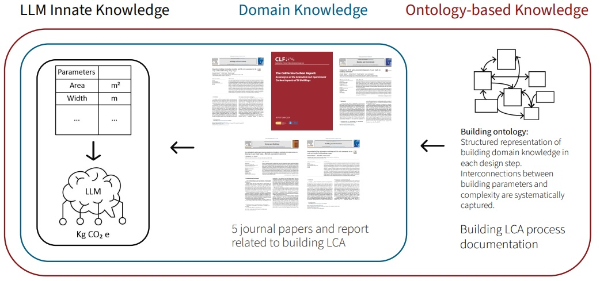

Hyeyun (Eunice) Jung
Stanford EERI Student Spotlight
BosNOMA Recognition Award
I am a licensed architect in Massachusetts and a PhD student at Stanford University in Civil and Environmental Engineering, advised by Michael Lepech and Jie Wang. I focus on connecting building design with data-driven Life Cycle Assessment.
I worked for eight years in the architecture industry, specializing in complex facades and building systems for high-rise buildings after obtaining a
At Stanford University, I develop quantitative methods for embodied carbon reduction of building design using Large Language Models. My research aims to create an LLM-integrated framework, such as an AI agent, that empowers designers and engineers to reduce embodied carbon during critical early phases.
Research
-

Large Language Models Based In-Context Learning for Early Stage Building Life Cycle Assessment
Oral Presentation, Proceedings of the 59th Hawaii International Conference on System Sciences (HICSS-59), 2026
Paper | Presentation -

Application of Generative Artificial Intelligence for Early Stage Building Life Cycle Assessment
Lighting Talk & Poster Session, International Symposium on Sustainable Systems and Technology (ISSST), 2025